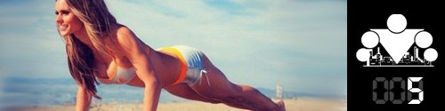
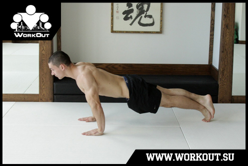
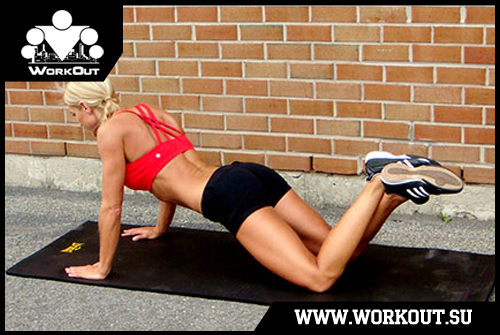

100 Дневный воркаут
<==== Вернуться к оглавлению
День 5. Отжимания от пола (правильные)

Для многих, и для меня в том числе, воркаут начинался именно с необычных отжиманий, которые демонстрировали участники команды
Bar-tendaz
. Признаюсь честно, меня в свое время они тоже очень впечатлили, но чтобы вытворять такие штуки, нужно сначала научиться самым базовым вариантам отжиманий. О них и пойдет речь в сегодняшнем инфо-посте!
Отжимания

Отжимания - базовое, многосуставное упражнение, выполняемое на полу (или любой другой, необязательно твердой, поверхности). Основные задействованные мышцы - грудные и трицепсы. Косвенно нагружаются передние пучки дельт, предплечья, мелкие мышцы кисти, мышцы низа спины, пресс и квадрицепсы.
Основные моменты
* Чем больше амплитуда движения, тем больше мышц задействуются в процессе, поэтому старайтесь отжиматься до касания пола носом или грудью
* Во время выполнения отжиманий держите мышцы рук, спины, живота и ног в напряжении, ваше тело должно образовать прямую линию и сохранять эту линию во время выполнения упражнения
* Для максимального результата вам необходимо медленно опускайться и резко поднимайться
* Вы отжимаетесь за счет силы грудных мышц и мышц рук, только так
* Вдох на движении вниз, выдох на движении вверх
Техника безопасности
Отжимания от пола, несмотря на свою эффективность, являются одним из самых безопасных упражнений в воркауте! Но тем не менее вам все же следует выполнять приведенные ниже рекомендации по правильной технике:
* Движение должно проводиться по естественной траектории
* Не выгибайте и не округляйте спину, не прогибайтесь в пояснице, представьте, что прямая линия проходит через ваш затылок, между лопатками и до ягодиц, эта прямая линия должна сохраняться все время
* Никаких рывков, резких движений или волн телом быть не должно
* Не задирайте голову вверх, но и не опускайте её слишком низко, смотрите перед собой
* При возникновении неприятных ощущений прекратите выполнение упражнения и попробуйте другой вариант
Само упражнение можно разделить на 4 составляющих:
1. Примите упор лежа, руки на ширине чуть шире плеч
2. Напрягите все тело, выстроив прямую линию от макушки до пяток
3. Сгибая руки в локтях опуститесь вниз до касания пола носом или грудными мышцами
4. Разгибая руки за счет силы грудных мышц и мышц рук вернитесь в исходное положение
Облегченные отжимания
Если у вас пока не получается выполнять полноценные отжимания от пола, то вы можете использовать приведённые ниже варианты в качестве подводящих упражнений:

Отжимания с коленей позволяют прочувствовать работу грудных мышц и научиться правильно сгибать руки в локтях, когда своих сил недостаточно для выполнения полноценного отжимания от пола.
Полезные советы
Положение рук.
Если вы только начинаете тренироваться, то я бы рекомендовал вам подобрать комфортное положение рук +/- на ширине плеч и весь БАЗОВЫЙ блок оттачивать именно такие отжимания. В ПРОДВИНУТОМ блоке вы узнаете о том, как с помощью изменения положения рук (уже/шире) можно задействовать разные мышцы и их отделы, но на данном этапе для вас главное научиться правильной технике отжиманий!
Положение стоп.
Чем шире расстояние между стопами, тем легче выполнять отжимания, чем уже - тем сложнее. Ещё можно попробовать ставить одну ногу на другую ;)
Глубина отжиманий.
Хотя выше и было сказано, что самыми эффективными являются глубокие отжимания, кому-то может быть не комфортно опускаться ниже 90 градусов в локтях. Это нормально, вы можете продолжать делать так, как вам комфортно, понемногу увеличивая амплитуду движения, таким образом подготавливая ваши локтевые и плечевые суставы.
Запястья.
У некоторых могут болеть кисти и запястья, когда они начинают делать отжимания. Это нормально, естественно и связано с тугоподвижностью запястья, особенно если вы никогда раньше не отжимались от пола. Я бы рекомендовал подобрать то положение ладоней на полу, которое является максимально комфортным и постепенно укреплять свои запястья и кисти привыкать к нему. А Олег предлагает заменить отжимания от пола на отжимания на кулаках (или упорах для отжиманий) и параллельно улучшать гибкость запястья соответствующим стретчинговыми упражнениями.
======> День 6. Заминка после тренировки